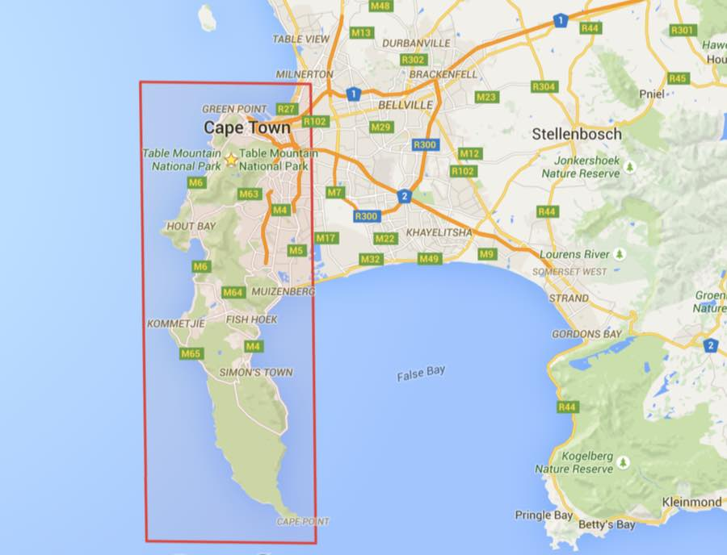

Cape Peninsula Citizen Science
Cape Peninsula
Citizen Science
What is
Citizen Science?
Citizen science projects are research projects conducted by the public.
You are invited to help advance the knowledge of plant disease in the Fynbos.
You Be The
Scientist!
Become a
Pathogen Hunter!
Plant pathogens are microorganisms that cause disease in plants.
They make plants sick!
Help us discover which microorganisms
are causing disease in the fynbos!
This Project is
Publicly Funded!
(Successfully Crowdfunded)
The Field Site

Have you seen a sick plant
in the Fynbos?
Sampling will begin once our permits have been formally acquired.
Please share your contact information with us to receive updates.
Our Poster for the
Arbor Week Expo